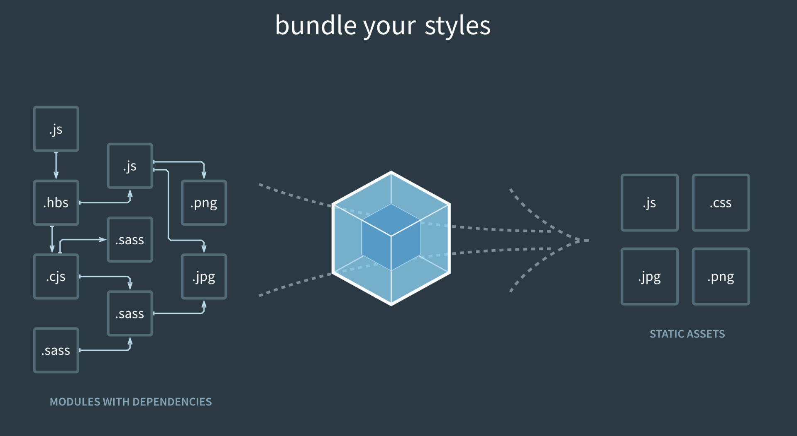
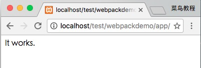
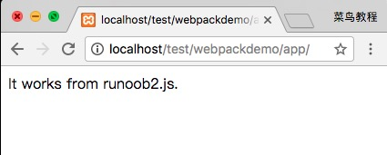
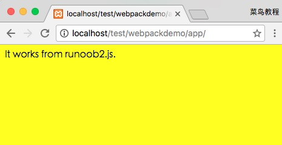
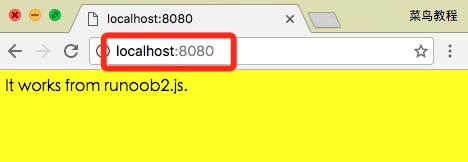

Webpackはフロントエンドリソースをロード/バンドルするツールです。モジュールの依存関係に基づいて静的解析を行い、指定されたルールに従ってこれらのモジュールを対応する静的リソースとして生成します。
この章はWebpack3.0でテスト済みです。

図からわかるように、Webpackは複数の静的リソース（js、css、less）を1つの静的ファイルに変換できるため、ページのリクエスト数を減らします。
次に、Webpackのインストールと使用方法について簡単に紹介します。
Webpackのインストール
Webpackをインストールする前に、ローカル環境が対応している必要があります。node.js。
npmのインストール速度が遅いため、このチュートリアルでは淘宝（タオバオ）のミラーとそのコマンドcnpmを使用しています。インストールと使用の紹介は以下を参照してください：淘宝NPMミラーを使用する。
cnpmを使用してwebpackをインストール：
プロジェクトの作成
次に、appディレクトリを作成します：
appディレクトリにrunoob1.jsファイルを追加します。コードは次のとおりです：
app/runoob1.js ファイル
appディレクトリにindex.htmlファイルを追加します。コードは次のとおりです：
app/index.html ファイル
次に、webpackコマンドを使用してバンドルします：
上記のコマンドを実行すると、runoob1.jsファイルがコンパイルされ、bundle.jsファイルが生成されます。成功すると、次のような情報が出力されます：
Hash: a41c6217554e666594cb
Version: webpack 1.12.13
Time: 50ms
Asset Size Chunks Chunk Names
bundle.js 1.42 kB 0 [emitted] main
[0] ./runoob1.js 29 bytes {0} [built]
ブラウザでindex.htmlを開くと、出力結果は次のようになります：

2つ目のJSファイルを作成
次に、別のJSファイルrunoob2.jsを作成します。コードは次のとおりです：
app/runoob2.js ファイル
runoob1.jsファイルを更新します。コードは次のとおりです：
app/runoob1.js ファイル
次に、webpackコマンドを使用してバンドルします：
ブラウザでアクセスすると、出力結果は次のようになります：

webpackはモジュールの依存関係に基づいて静的解析を行い、これらのファイル（モジュール）はbundle.jsファイルに含まれます。Webpackは各モジュールに一意のIDを割り当て、このIDを介してモジュールをインデックス化しアクセスします。ページ起動時には、まずrunoob1.js内のコードが実行され、他のモジュールはrequireが実行されたときに実行されます。
LOADER
Webpack自体はJavaScriptモジュールのみを処理できます。他のタイプのファイルを処理する場合は、loaderを使用して変換する必要があります。
したがって、アプリケーションにCSSファイルを追加する必要がある場合は、css-loaderとstyle-loaderを使用する必要があります。これらは2つの異なることを行います。css-loaderはCSSファイルを走査し、url()式を見つけて処理します。style-loaderは元のCSSコードをページ内のstyleタグに挿入します。
次に、以下のコマンドを使用してcss-loaderとstyle-loaderをインストールします（グローバルインストールには-gパラメータが必要です）。
上記のコマンドを実行すると、現在のディレクトリにnode_modulesディレクトリが生成されます。これがcss-loaderとstyle-loaderのインストールディレクトリです。
次に、style.cssファイルを作成します。コードは次のとおりです：
app/style.css ファイル
runoob1.jsファイルを変更します。コードは次のとおりです：
app/runoob1.js ファイル
次に、webpackコマンドを使用してバンドルします：
ブラウザでアクセスすると、出力結果は次のようになります：

CSSファイルをrequireするときは常にloaderプレフィックスを書く必要があります。!style-loader!css-loader!、もちろんモジュールタイプ（拡張子）に基づいて必要なローダーを自動的にバインドすることもできます。runoob1.js 内のrequire("!style-loader!css-loader!./style.css")に変更しますrequire("./style.css") ：
app/runoob1.js ファイル
次に実行します：
ブラウザでアクセスすると、出力結果は次のようになります：
明らかに、この2つのloaderの使用方法は同じ効果です。
設定ファイル
いくつかのコンパイルオプションを設定ファイルに置くことで、一元管理ができます：
webpack.config.jsファイルを作成します。コードは次のとおりです：
app/webpack.config.js ファイル
次に、webpackコマンドを実行するだけでbundle.jsファイルを生成できます：
webpackコマンドを実行すると、デフォルトで現在のディレクトリのwebpack.config.jsファイルが読み込まれます。
プラグイン
プラグインはwebpackの設定情報pluginsオプションで指定し、loaderではできない作業を実行するために使用されます。
webpackにはいくつかのプラグインが組み込まれています。cnpmを使用していくつかのプラグインをインストールできます。
組み込みプラグインを使用するには、以下のコマンドでインストールする必要があります：
たとえば、組み込みのBannerPluginプラグインをインストールして、ファイルの先頭にコメント情報を出力できます。
webpack.config.jsを変更します。コードは次のとおりです：
app/webpack.config.js ファイル
次に実行します：
webpack
bundle.jsを開くと、ファイルの先頭に指定したコメント情報が表示されているのがわかります。
開発環境
プロジェクトが大きくなるにつれて、webpackのコンパイル時間は長くなります。パラメータを使用すると、コンパイルの出力に進捗状況と色を付けることができます。
モジュールを変更するたびに再コンパイルしたくない場合は、監視モードを起動できます。監視モードを有効にすると、変更のないモジュールはコンパイル後にメモリにキャッシュされ、毎回再コンパイルされることはないため、監視モードの全体的な速度は非常に高速です。
もちろん、webpack-dev-server開発サーバーを使用することもできます。これにより、localhost:8080でexpress静的リソースWebサーバーを起動でき、監視モードでwebpackを自動的に実行します。ブラウザで http://localhost:8080/ または http://localhost:8080/webpack-dev-server/ を開くと、プロジェクト内のページとコンパイルされたリソース出力を閲覧できます。また、socket.ioサービスを介してそれらの変更をリアルタイムで監視し、ページを自動的にリフレッシュします。
ブラウザで http://localhost:8080/ を開くと、出力結果は次のようになります：
